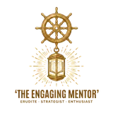
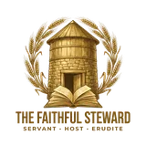
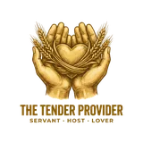
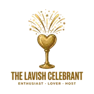
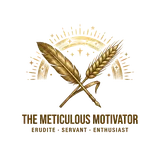
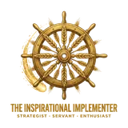
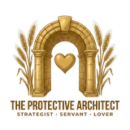
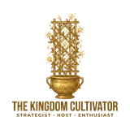

The 35 Archetypes of the Soul
The Motivational Symphony: when your three dominant gifts sound together, they strike a chord—one of thirty-five distinct personality archetypes.
The Motivational Symphony: when your three dominant gifts sound together, they strike a chord—one of thirty-five distinct personality archetypes.
Within the architecture of the human soul, scripture reveals a beautiful and intricate design. Beyond the situational gifts of the Spirit or the functional gifts of ministry, there lies a foundational layer of motivational wiring. These seven "Gifts of the Father," as articulated in Romans 12, are not abilities acquired or roles assumed; they are personality-based motivational drives that are woven into the fabric of our being from birth. They are the specific measure of grace and faith distributed by God, forming the core of who we are and how we naturally operate in the world. These gifts---Prophecy, Service, Teaching, Encouragement, Giving, Leadership, and Mercy---are the fundamental frameworks that shape our decisions, energize our contributions, and define our innate approach to life and relationships. To understand this design is to receive the key to "sober judgment," recognizing that our motivational wiring is not an achievement to be proud of but a portion of grace to be stewarded.
The journey into self-understanding, however, does not end with the identification of a single, primary gift. The statement "You are not just a single gifting" serves as a profound invitation to a deeper truth. Each person carries varying intensities of all seven motivations, creating a unique blend, a "motivational fingerprint," that is far more complex and beautiful than any single trait. The true essence of an individual's design is not found in their most dominant gift alone, but in the dynamic interplay and synergy of their top three. This combination creates a "motivational chord"---a rich, three-part harmony that defines a unique personality archetype with its own distinct purpose, expression, and music to offer the world. The harmony, and at times the creative tension, between these three dominant gifts is where the most potent and nuanced aspects of personality emerge. This report takes that foundational idea to its most practical and insightful conclusion, moving beyond simple "types" to explore the 35 complex and powerful archetypes that arise from these combinations.
The seven gifts align along three axes of contribution—each answering a question every community must answer. Reading an archetype across these axes reveals its natural orientation, its strengths, and its likely blind spots at a glance.
The visionary compass: purpose, principle, and direction.
The engine room: diligent work and wise provision turn vision into reality.
The relational glue: people stay valued, connected, and cared for.
This report is designed as a tool for profound self-discovery and relational understanding. As you explore the profiles, you are invited to do so with an open and curious heart. The following pages contain a master reference table for quick navigation, followed by detailed profiles of all 35 three-gift archetypes. Find the combination that most resonates with your own motivational design, but also take the time to understand the archetypes of those you live and work with. The goal is not to apply a rigid label, but to hear the unique music of your own soul and to learn to appreciate the diverse and beautiful symphony created by the harmony of all. Part II: The 35 Archetypes - Profiles in Motivational Harmony -------------------------------------------------------------
Filter by gift to see every archetype that carries it, or browse by family below.
This archetype represents the rarest and most potent concentration of visionary power. Composed entirely of gifts from the "Why" axis, this individual is a force of nature, driven by an unquenchable thirst for truth, a genius for grand design, and a will to see the future become reality. Their world is one of principles, systems, and transformation.
These archetypes pair two visionary gifts with one gift of execution. The result is conviction with calluses: ideas that get researched, planned, funded, and built—not merely proclaimed.
To ground revolutionary ideas in meticulous research and diligent, hands-on work.
Read the archetype → 3To validate transformative ideas with rigorous analysis and then strategically fund their implementation.
Read the archetype → 6To translate a grand, disruptive vision into a practical, step-by-step plan executed with excellence.
Read the archetype → 7To architect and fund large-scale, transformative movements and institutions.
Read the archetype → 10To design and execute complex projects with a masterful blend of strategic planning and meticulous craftsmanship.
Read the archetype → 11To build enduring, well-resourced institutions based on deep research and sound strategic planning.
Read the archetype →Here two visionary gifts join one gift of connection, so truth arrives wrapped in relationship. These archetypes inspire, counsel, and shepherd people toward a better future rather than driving them to it.
To translate complex truths into compelling, hopeful narratives that rally people to a cause.
Read the archetype → 5To deliver challenging truths with profound wisdom and deep empathy for the human heart.
Read the archetype → 8To fuse a bold, strategic vision with an infectious passion that mobilizes and inspires teams.
Read the archetype → 9To lead with decisive, transformative vision while fiercely protecting the well-being of the people involved.
Read the archetype → 12
To develop people by combining clear, strategic guidance with inspiring, motivational coaching.
Read the archetype → 13To lead with profound wisdom and a clear plan, while providing deep, pastoral care for the team.
Read the archetype →Built on the double foundation of Service and Giving, these archetypes are the hands and provision of any community. Vision becomes reality here—through tireless work, wise stewardship, and tangible care.
To fuel radical change not with words, but with tireless work and the generous provision of practical resources.
Read the archetype → 15
To manage and multiply resources with profound diligence, wisdom, and meticulous attention to detail.
Read the archetype → 16To create a culture of celebration and community through tireless service and lavish hospitality.
Read the archetype → 17To build and manage the operational systems that provide for a community's long-term practical needs.
Read the archetype → 18
To express deep compassion by tirelessly working and generously giving to meet the tangible needs of the hurting.
Read the archetype →Anchored by both Encouragement and Mercy, these archetypes carry a double portion of relational grace. They build the bonds, safety, and joy that make a community feel like family.
To challenge injustice and speak hard truths, fueled by a deep love for people and a desire to rally them to a better way.
Read the archetype → 20To offer holistic care for others through uplifting encouragement, empathetic presence, and tangible acts of service.
Read the archetype → 21To create a safe and uplifting space where deep empathy is paired with wise, insightful counsel.
Read the archetype → 22
To build community by generously creating beautiful, welcoming experiences where people feel cherished and connected.
Read the archetype → 23To lead teams toward a goal by fostering a culture of profound psychological safety, connection, and inspiration.
Read the archetype →One gift from every axis, led by the Catalyst’s fire. These archetypes see what is broken and answer with hands, resources, and heart—transformation made tangible.
To inspire people to join a transformative cause through joyful, hands-on work and infectious optimism.
Read the archetype → 25To see what is broken, feel the pain it causes, and be compelled to physically build a tangible solution.
Read the archetype → 26To fund and celebrate revolutionary new ventures, inspiring others to invest in a bold vision of the future.
Read the archetype → 27To identify the root cause of suffering and then build and fund the institutions necessary for its healing.
Read the archetype →One gift from every axis, anchored by the Erudite’s depth. Knowledge here is never abstract: it feeds, funds, counsels, and equips real people with practical wisdom.

To make work and learning enjoyable and effective through clear instruction, practical help, and positive reinforcement.
Read the archetype → 29To provide care that is not only compassionate and practical but also deeply wise and discerning.
Read the archetype → 30To wisely invest in the potential of others, providing both the resources and the inspiration needed for them to flourish.
Read the archetype → 31To offer wise counsel and healing, backed by the generous provision of resources to aid in restoration.
Read the archetype →One gift from every axis, ordered by the Strategist’s plan. These archetypes build organizations and communities where excellent systems and genuine care reinforce each other.

To lead teams to execute a plan with excellence by fostering a positive, high-morale, and collaborative environment.
Read the archetype → 33
To build great things while ensuring the process is practical, excellent, and deeply humane.
Read the archetype → 34
To build and grow organizations by aligning a compelling vision, strategic resources, and an inspired culture.
Read the archetype → 35To lead with a clear vision for success, generously providing for and protecting the people on the journey.
Read the archetype →To identify your archetype is to be handed a key—not to a rigid box, but to the sheet music of your soul. Your three-gift chord is a grace-filled design, and its inner tensions are not flaws; they are the strings of your instrument. The friction between the Catalyst's truth and the Lover's mercy is precisely what makes the Compassionate Sage wise. Learning to hold those tensions in creative balance is the art of living your design—so embrace the specific harmony you were made to play.
Every combination of light casts its own shadow. The same brilliance that fuels the Apex Visionary can harden into intellectual pride; the Devoted Caretaker's love can slide into burnout. Watch your frustrations and your fatigue—they usually signal a core gift running out of balance or operating in its immature form. The goal is not to eliminate your challenges but to integrate them, letting your strengths mature until the shadows recede.
Your motivational design was never meant for a solo performance—“we, though many, form one body, and each member belongs to all the others.” Start by knowing which questions your own archetype is always asking: the Why, the How, or the Who. Then learn the music of the people you love; their frustrations are often a cry for their core question to be answered. Offer the Enthusiast genuine affirmation, give the Servant practical help before they ask, grant the Erudite room to think—and everyday relationships turn into harmony.
This knowledge is a sacred trust—given not for pride or judgment, but for more effective and loving service. Live your motivational design with courage, grace, and purpose, and let your particular blend of truth, action, and love resonate in your family, your community, and your work. Play your part with joy; the symphony is not complete without your notes.
Your top three gifts reveal your archetype. Take the assessment to discover yours.
Find My Archetype